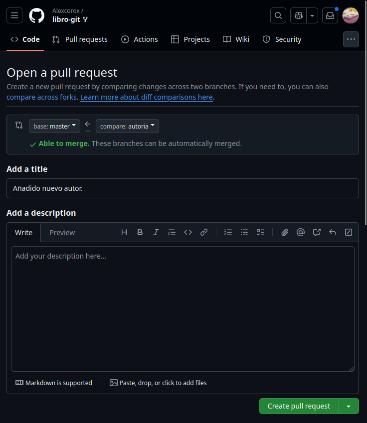

Práctica 5.1 - Ejercicios de Git y Github
Repositorio DEAW
-
Crear un repositorio en vuestro Github llamado DEAW
- Para crear un repositorio en github nos iremos al inicio y haremos clic en new:

- Tras esto nos aparecerá la página para crear el repositorio en github

-
Clonar vuestro repositorio en local
- Para clonar nuestro repositorio en local deberemos ejecutar el siguiente comando:

README
-
Crear(si no lo habeis hecho ya) en vuestro repositorio local un documento README.md
- Para crear un archivo README.md usaremos el siguiente comando:
Y añadiremos un pequeño texto al mismo.

Commit Inicial
-
Realizar un commit inicial con el comentario
Comenzamos con los ejercicios de Git- Para hacer un commit primero necesitamos añadir los archivos a los que queramos incluir en el commit.
- Y así habremos preparado el archivo el README.md para el commit.
Push inicial
-
Subir los cambios al repositorio remoto

Ignorar archivos
-
Crear en el repositorio local un fichero llamado privado.txt.
- Crearemos el fichero con
nanoy lo dejaremos vacío

- Crearemos el fichero con
-
Crear en el repositorio local una carpeta llamada privada.
- Y para crear la carpeta lo haremos con
mkdir

- Y para crear la carpeta lo haremos con
-
Realizar los cambios oportunos para que tanto el archivo como la carpeta sean ignorados por git.
- Una vez que tenemos los archivos creados necesitaremos crear un archivo llamado
.gitignoreen donde incluiremos los archivos y directorios anteriores para excluirlos.
- Una vez que tenemos los archivos creados necesitaremos crear un archivo llamado
Añadir fichero 1.txt
-
Añadir fichero
1.txtal repositorio local.- Ahora creamos el archivo y lo añadimos con git add

Crear el tag v0.1
-
Crea un tag llamado v0.1

Subir el tag v0.1
-
Subir los cambios al repositorio remoto.
- Para subir el tag v0.1 usaremos el siguiente comando

Cuenta de github
-
Poner una foto en vuestro perfil de GitHub
- Para cambiar la foto de perfil deberemos ir a configuración de github y hacer clic en cambiar foto

Y como podemos ver ya hemos cambiado la foto
-
Poner el doble factor de autentificación en vuestra cuenta de Github
- Para añadir el doble factor de autentificación deberemos irnos al apartado de contraseñas y autenticación, en donde añadiremos los métodos de autenticación de doble factor que queramos.

Uso social de github
-
Preguntar los nombres de usuario de GitHub de 2 de tus compañeros de clase, búscalos, y síguelos.
- Buscamos los usuarios y le damos a seguir:


-
Seguir los repositorios DEAW del resto de tus compañeros.
- Dentro del repositorio, le daremos a watch all activity y ya estaremos siguiendo el repositorio

Y para seguir al resto seria igual.
-
Añadir una estrella a los repositorios DEAW del resto de tus compañeros.
- Para dar una estrella haremos clic en star y así habremos dado una estrella

Crear una tabla
-
Crear una tabla en el fichero README.md con la información de varios de tus compañeros de clase:

Colaboradores
-
Poner a un compañero como colaborador en el repositorio DEAW
- Para añadir un colaborador deberemos ir a
settingsdentro del repositorio. Una vez dentro iremos a colaboradores y haremos clic en añadir personas


- Para añadir un colaborador deberemos ir a
Crear una rama v0.2
-
Crear una rama
v0.2.- Para crear una rama nueva lo haremos con la siguiente rama
-
Posiciona tu carpeta de trabajo en esta rama.
Atención
Antes de hacer un cambio de rama deberemos tener todos los cambios confirmados en el repositorio.
- Para cambiar de rama deberemos usar el siguiente comando:

Añadir fichero 2.txt
-
Añadir un fichero 2.txt en la rama v0.2
Crear rama remota v0.2
-
Subir los cambios al repositorio remoto
- Para subir la rama v0.2 usaremos el siguiente comando.
Merge directo
- Posicionarse en la rama
main -
Hacer un merge de la rama v0.2 en la rama master

Merge con conflicto
-
En la rama
masterponerHolaen el fichero1.txty hacer commit -
Posicionarse en la rama v0.2 y poner Adios en el fichero "1.txt" y hacer commit.
-
Posicionarse de nuevo en la rama master y hacer un merge con la rama v0.2
- Una vez que hemos hecho los cambios en cada rama hacemos un merge y nos indicara que hay un conflicto.

- Para resolverlo nos iremos al archivo y nos quedaremos con los cambios de la rama que queramos
- Una vez que hemos dejado el archivo con los cambios correctos y realizamos un commit
Listado de ramas
-
Listar las ramas con merge y las ramas sin merge.
- Para listar las ramas con merge usaremos el siguiente comando:
- Para listar las ramas sin merge usaremos el siguiente comando:

Arreglar conflicto
- El conflicto anterior ha sido arreglado en el 3 apartado de `Merge con conflicto`
Borrar rama
- Crear un tag v0.2
-
Borrar la rama v0.2

Listado de cambios
-
Listar los distintos commits con sus ramas y sus tags.
- Para listar los cambios usaremos el comando:
- Y nos mostrará algo así
Ejercicios Git y Github II
Ejercicios de creación y actualización de repositorios
Ejercicio 1
-
Configurar Git definiendo el nombre del usuario, el correo electrónico y activar el coloreado de salida.
- Para configurar el nombre de usuario usaremos el comando:
- Para configurar el email de usuario usaremos el comando:
- Y por último configuraremos el coloreado de salida.
Ejercicio 2
-
Crear un repositorio nuevo con el nombre libro y mostrar su contenido
- Usaremos los siguientes comandos para crear el repositorio libro:

Ejercicio 3
-
Comprobar el estado del repositorio.
- Como hemos podido ver en la anterior captura el repositorio está vacío
-
Crear un fichero
indice.txtcon el siguiente contenido:
-
Comprobar de nuevo el estado del repositorio.

-
Añadir el fichero a la zona de intercambio temporal.
-
Volver a comprobar una vez más el estado del repositorio.

Ejercicio 4
-
Realizar un commit de los últimos cambios con el mensaje “Añadido índice del libro.” y ver el estado del repositorio.
Ejercicio 5
-
Cambiar el fichero
indice.txtpara que contenga lo siguiente: -
Mostrar los cambios con respecto a la última versión guardada en el repositorio.

-
Hacer un commit de los cambios con el mensaje "Añadido capítulo 3 sobre gestión de ramas"

Ejercicio 6
-
Mostrar los cambios de la última versión del repositorio con respecto a la anterior.

-
Cambiar el mensaje del último commit por "Añadido capítulo 3 sobre gestión de ramas al índice"
-
Volver a mostrar los últimos cambios del repositorio.
- Esto lo haremos con el mismo comando que en el primer apartado
Ejercicios de manejo del historial de cambios
Ejercicio 1
-
Mostrar el historial de cambios del repositorio.
- Para mostrar el historial de cambios del repositorio lo haremos con el siguiente comando

-
Crear la carpeta capítulos y crear dentro de ella el fichero capitulo1.txt con el siguiente texto.
El flujo de trabajo básico con Git consiste en: 1- Hacer cambios en el repositorio. 2- Añadir los cambios a la zona de intercambio temporal. 3- Hacer un commit de los cambios.
-
Añadir los cambios a la zona de intercambio temporal.

-
Hacer un commit de los cambios con el mensaje "Añadido capítulo 1." Volver a mostrar de cambios del repositorio.

Ejercicio 2
-
Crear el fichero
capitulo2.txten la carpeta capítulos con el siguiente texto.El flujo de trabajo básico con Git consiste en: 1- Hacer cambios en el repositorio. 2- Añadir los cambios a la zona de intercambio temporal. 3- Hacer un commit de los cambios. -
Añadir los cambios a la zona de intercambio temporal.
-
Hacer un commit de los cambios con el mensaje “Añadido capítulo 2.”

-
Mostrar las diferencias entre la última versión y dos versiones anteriores.
- Para mostrar las diferencias entre la última versión y dos versiones anteriores lo haremos con el siguiente comando:

Ejercicio 3
-
Crear el fichero capitulo3.txt en la carpeta capítulos con el siguiente texto.
Git permite la creación de ramas lo que permite tener distintas versiones del mismo proyecto y trabajar de manera simultanea en ellas.
-
Añadir los cambios a la zona de intercambio temporal.

-
Hacer un commit de los cambios con el mensaje “Añadido capítulo 3.”

-
Mostrar las diferencias entre la primera y la última versión del repositorio.
- Para hacer esto necesitamos primero tenemos que saber el ID del primer commit:
-
Y el ID que vemos a la izquierda es el ID de cada commit en este caso el número 1 es
f09939b. -
Ahora hacemos la diferencia con este comando:

Ejercicio 4
-
Añadir al final del fichero
indice.txtla siguiente línea:Capítulo 5: Conceptos avanzados -
Añadir los cambios a la zona de intercambio temporal.

-
Hacer un commit de los cambios con el mensaje “Añadido capítulo 5 al índice.”.

-
Mostrar quién ha hecho cambios sobre el fichero
indice.txt.- Para mostrar quién ha hecho los cambios usaremos

Ejercicios de deshacer cambios
Ejercicio 1
-
Eliminar la última línea del fichero
indice.txty guardarlo.
-
Comprobar el estado del repositorio.
-
Deshacer los cambios realizados en el fichero
indice.txtpara volver a la versión anterior del fichero.- Para deshacer los cambios usaremos el siguiente comando:

-
Volver a comprobar el estado del repositorio.

Ejercicio 2
-
Eliminar la última línea del fichero
indice.txty guardarlo. -
Añadir los cambios a la zona de intercambio temporal.
-
Comprobar de nuevo el estado del repositorio.
-
Quitar los cambios de la zona de intercambio temporal, pero mantenerlos en el directorio de trabajo.
- Para quitar los cambios de la zona de intercambio, pero mantenerlos en el directorio de trabajo usaremos el siguiente comando:

-
Comprobar de nuevo el estado del repositorio.

-
Deshacer los cambios realizados en el fichero
indice.txtpara volver a la versión anterior del fichero. -
Volver a comprobar el estado del repositorio.

Ejercicio 3
-
Eliminar la última línea del fichero
indice.txty guardarlo. -
Eliminar el fichero
capitulos/capitulo3.txt. -
Añadir un fichero nuevo
capitulos/capitulo4.txtvacío. -
Añadir los cambios a la zona de intercambio temporal.
-
Comprobar de nuevo el estado del repositorio.
-
Quitar los cambios de la zona de intercambio temporal, pero mantenerlos en el directorio de trabajo.
- Para hacer esto usaremos los siguientes comandos:
-
Comprobar de nuevo el estado del repositorio.
-
Deshacer los cambios realizados para volver a la versión del repositorio.
- Aquí usaremos el mismo comando que en el apartado 6 pero sin la opción
--staged. Y para deshacer los cambios del capitulo4 usaremos este comando.
- Usamos rm en vez de git rm o restore, porque este archivo no está guardado en ningún commit de git.
- Aquí usaremos el mismo comando que en el apartado 6 pero sin la opción
-
Volver a comprobar el estado del repositorio.
Ejercicio 4
-
Eliminar la última línea del fichero
indice.txty guardarlo. -
Eliminar el fichero
capitulos/capitulo3.txt.
-
Añadir los cambios a la zona de intercambio temporal y hacer un commit con el mensaje “Borrado accidental.”
-
Comprobar el historial del repositorio.

-
Deshacer el último commit pero mantener los cambios anteriores en el directorio de trabajo y la zona de intercambio temporal.
- Para mantener los cambios y borrar el commit, deberemos usar el siguiente comando:
- El parámetro soft nos permite mantener los cambios y solo deshace el commit.

-
Comprobar el historial y el estado del repositorio.

-
Volver a hacer el commit con el mismo mensaje de antes.
-
Deshacer el último commit y los cambios anteriores del directorio de trabajo volviendo a la versión anterior del repositorio.
- Ahora usaremos el parámetro
--harden vez de--softpara que el directorio vuelve a estar como el último commit antes de borrado accidental.

- Ahora usaremos el parámetro
-
Comprobar de nuevo el historial y el estado del repositorio.
Ejercicios de gestión de ramas
Ejercicio 1
-
Crear una nueva rama bibliografía y mostrar las ramas del repositorio.
- Para crear una usaremos el comando
git branchcomo se muestra abajo
- Y para mostrar las ramas actuales usaremos:
- Para crear una usaremos el comando
Ejercicio 2
-
Crear el fichero
capitulos/capitulo4.txty añadir el texto siguienteEn este capítulo veremos cómo usar GitHub para alojar repositorios en remoto. -
Añadir los cambios a la zona de intercambio temporal.

-
Hacer un commit con el mensaje “Añadido capítulo 4.”
-
Mostrar la historia del repositorio incluyendo todas las ramas.
- Para que en log salgan todas las ramas deberemos usar el parámetro
--all.
- Para que en log salgan todas las ramas deberemos usar el parámetro
Ejercicio 3
-
Cambiar a la rama bibliografía.
- Para cambiar a la rama bibliografía lo haremos con
git checkout
Aviso
Para cambiar de rama deberemos tener todos los cambios confirmados en el repositorio, si no podrían ocurrir errores.
- Para cambiar a la rama bibliografía lo haremos con
-
Crear el fichero
bibliografia.txty añadir la siguiente referencia
Chacon, S. and Straub, B. Pro Git. Apress.
-
Añadir los cambios a la zona de intercambio temporal.
-
Hacer un commit con el mensaje “Añadida primera referencia bibliográfica.”
-
Mostrar la historia del repositorio incluyendo todas las ramas.
Ejercicio 4
-
Fusionar la rama bibliografía con la rama master.
-
Para fusionar la rama bibliografía con la rama master primero debemos de situarnos en la rama master y luego hacer un
merge -
Para cambiarnos de rama usaremos
git checkoutcomo anteriormente
-
-
Mostrar la historia del repositorio incluyendo todas las ramas.

-
Eliminar la rama bibliografía.
- Para borrar la rama bibliografía usaremos el siguiente comando
-
Mostrar de nuevo la historia del repositorio incluyendo todas las ramas.
Ejercicio 5
-
Crear la rama bibliografía.
-
Cambiar a la rama bibliografía.
-
Cambiar el fichero
bibliografia.txtpara que contenga las siguientes referencias: -
Añadir los cambios a la zona de intercambio temporal y hacer un commit con el mensaje “Añadida nueva referencia bibliográfica.”
-
Cambiar a la rama master.
-
Cambiar el fichero
bibliografia.txtpara que contenga las siguientes referencias:
Chacon, S. and Straub, B. Pro Git. Apress.
Loeliger, J. and McCullough, M. Version control with Git. O’Reilly.
-
Añadir los cambios a la zona de intercambio temporal y hacer un commit con el mensaje “Añadida nueva referencia bibliográfica.”

-
Fusionar la rama bibliografía con la rama master.
-
Resolver el conflicto dejando el fichero
bibliografia.txtcon las referencias:
Chacon, S. and Straub, B. Pro Git. Apress.
Loeliger, J. and McCullough, M. Version control with Git. O’Reilly.
Hodson, R. Ry’s Git Tutorial. Smashwords (2014)
-
Añadir los cambios a la zona de intercambio temporal y hacer un commit con el mensaje “Resuelto conflicto de bibliografía.”
-
Mostrar la historia del repositorio incluyendo todas las ramas.

Ejercicios de repositorios remotos
Ejercicio 1
-
Crear un nuevo repositorio público en GitHub con el nombre libro-git.

-
Añadirlo al repositorio local del libro.
-
Mostrar todos los repositorios remotos configurados
Ejercicio 2
-
Añadir los cambios del repositorio local al repositorio remoto de Github.
- Para submit los cambios a git deberemos usar el siguiente comando:
-
Acceder a Github y comprobar que se han subido los cambios mostrando el historial de versiones.
- Y como podemos ver, se han subido los cambios
Ejercicio 3
-
Colaborar en el repositorio remoto libro-git de otro usuario.
-
Clonar su repositorio libro-git.
- Para clonar un repositorio usaremos
git clone

- Para clonar un repositorio usaremos
-
Añadir el fichero autores.txt que contenga el nombre del usuario y su correo electrónico.
-
Añadir los cambios a la zona de intercambio temporal.
-
Hacer un commit con el mensaje “Añadido autor.”

-
Subir los cambios al repositorio remoto.
- Esta vez, como la rama en el remoto ya está creada obviaremos el parámetro
-uengit push

- Esta vez, como la rama en el remoto ya está creada obviaremos el parámetro
Ejercicio 4
-
Hacer una bifurcación del repositorio remoto
asalber/libro-giten GitHub.- Para lograr esto nos iremos al repositorio en github y haremos clic sobre Fork
-
Clonar el repositorio creado en la cuenta de GitHub del usuario.
-
Crear una nueva rama autoría y activarla.
-
Añadir el nombre del usuario y su correo al fichero autores.txt.
-
Añadir los cambios a la zona de intercambio temporal.
-
Hacer un commit con el mensaje “Añadido nuevo autor.”
-
Subir los cambios de la rama autoría al repositorio remoto en GitHub.
-
Hacer un Pull Request de los cambios en la rama autoría.
- Para crear un pull request deberemos ir al apartado pull request dentro de github y haremos clic en
create a pull request
- Seleccionamos las ramas que queremos que compare para hacer el pull request. Y como podemos observar detecta las diferencias que hay entre ellas.

- Le asignamos un nombre y le damos a
create pull request.

- Una vez que hayamos completado estos pasos, habremos creado nuestro pull request

- Para crear un pull request deberemos ir al apartado pull request dentro de github y haremos clic en